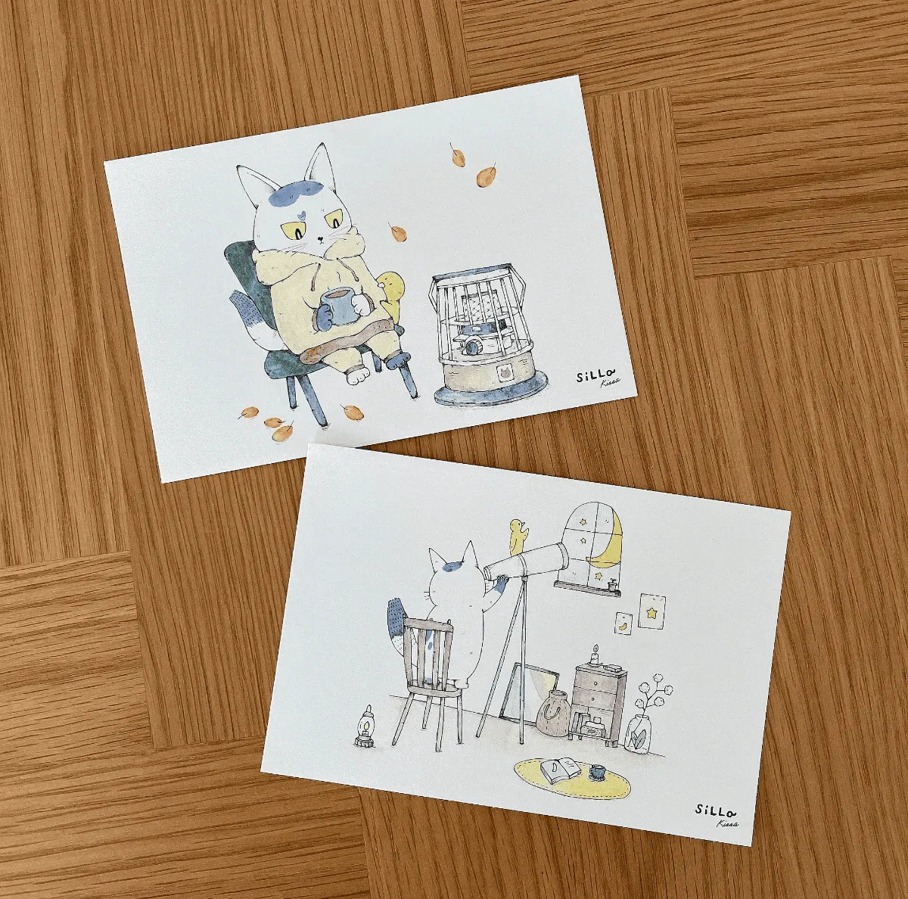
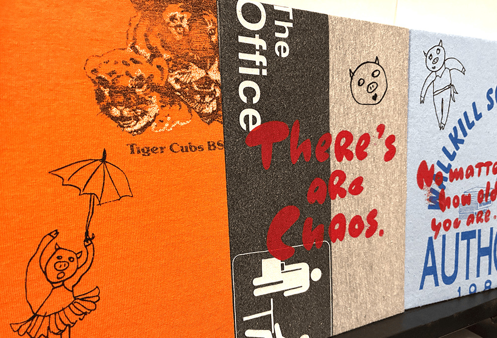
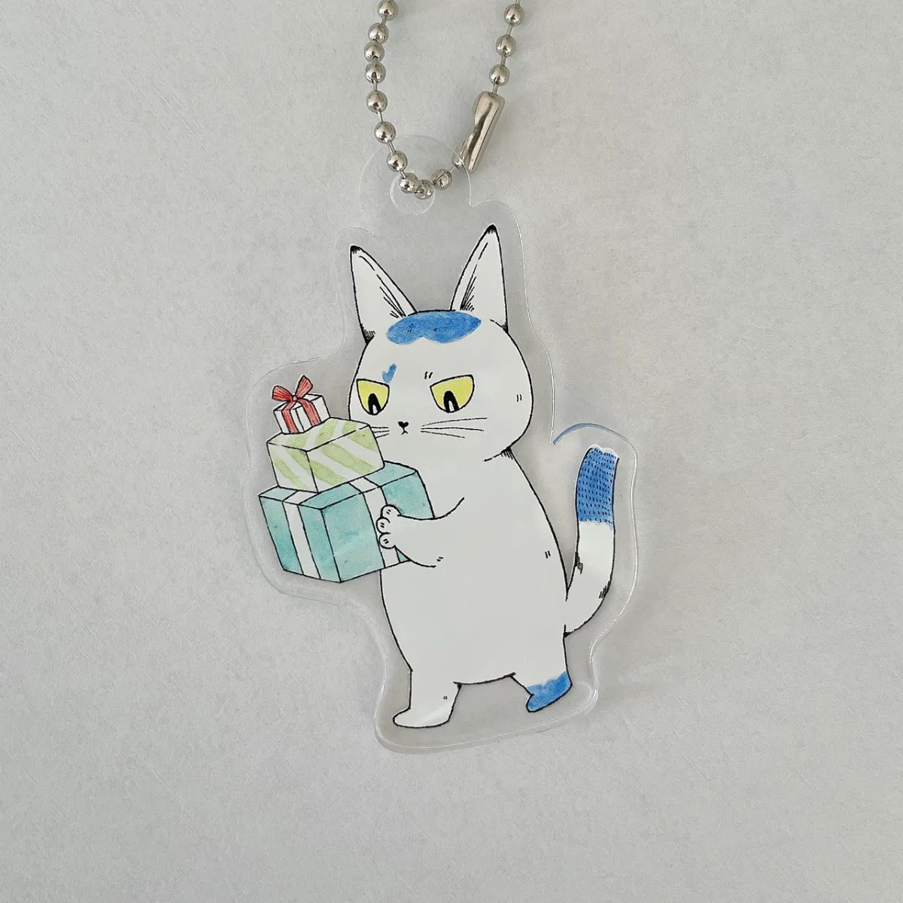
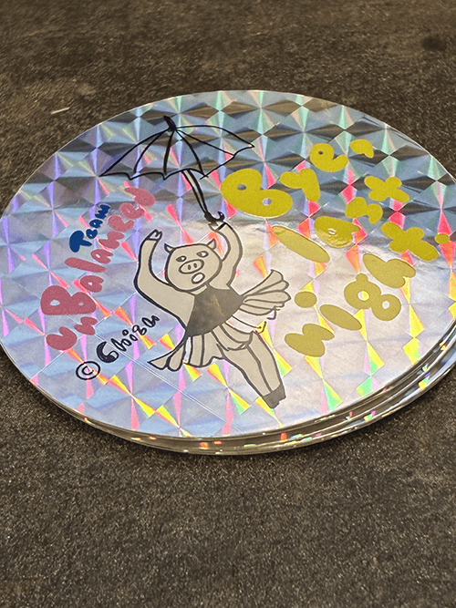
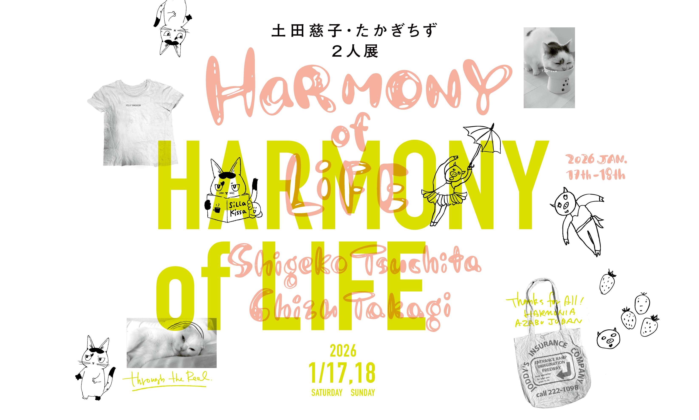
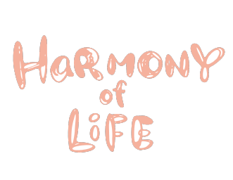
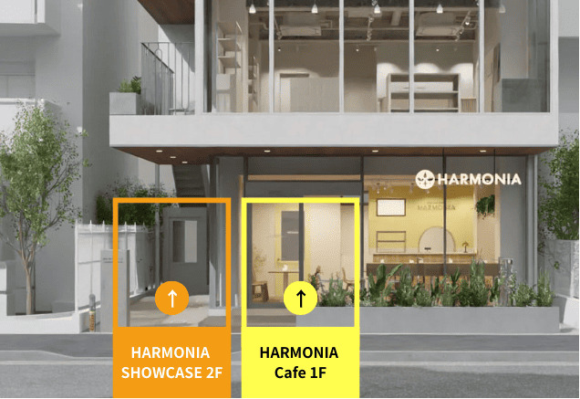
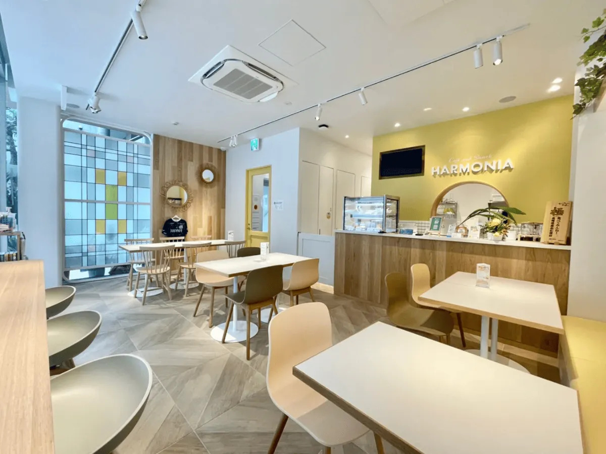

想像の世界を⽇常に落とし込む
作品の⼀つひとつが醸し出す⾊
重なり合うことで⽣まれる奇跡
土田慈子 たかぎちず
⼆⼈のアーティストが奏でる物語をお届けします
| 日時 | 2026年1月17日（土）〜18日（日） |
|---|---|
| 時間 |
1月17日（土）11:00〜19:00 1月18日（日）10:00〜17:00 |
| 場所 |
〒106-0047 東京都港区麻布十丁目6-5 麻布十番ハルモニアビル 2F 「HARMONIA SHOWCASE」 |
■徒歩からのアクセス
東京メトロ南北線 ／ 麻布十番駅(出入口1) 徒歩3分（220m）
都営大江戸線 ／ 赤羽橋駅(中之橋口) 徒歩14分（1000m）
東京メトロ南北線 ／ 白金高輪駅(出入口4) 徒歩15分（1100m）
■バス停からのアクセス
都営バス 橋86 仙台坂下 徒歩3分（200m）
都営バス 橋86 二ノ橋 徒歩2分（110m）
都営バス 橋86 麻布十番駅 徒歩4分（260m）
1FにHARMONIA CAFEがあります。
その脇（オレンジ部分）にドアがありますので
そこから入っていただき、エレベーターで2Fに
上がってください。
※黄色部分はカフェの入口になります。

※お支払いは現金のみとなります。
※原画イラストをご購入される場合は、指定口座へ振込をお願いいたします。
2人展終了後、入金確認が取れ次第、発送させていただきます。




HARMONIAの各ショップロゴをたかぎちずが担当させていただいた御縁があり今回の開催となりました。
作品展のあとは、是非1FのCafe and Snack HARMONIAでおくつろぎください。
